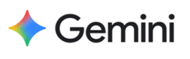
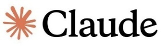

03프로젝트
프로젝트의 GIF를 클릭하면 링크로 이동합니다.


010-9270-6579
kch633@naver.com
의정부시 금신로 111
2000. 07. 05
군필 - 육군 병장 만기전역
20.01.28 ~ 21.08.07
이과
콘텐츠 IT, 빅데이터 전공 (게임 개발 전공)
생성형AI를 활용한 온라인 기획 3기 수료
프로젝트의 GIF를 클릭하면 링크로 이동합니다.

기획 보조 및 자동화
Gems 활용 번역 봇 제작, 기획서 제작 보조리소스 제작
'둥둥아일랜드' UI 에셋 제작리소스 제작
'둥둥아일랜드', '덱빌딩 RPG' 아이콘 제작
웹 개발 및 퍼블리싱
프로토타입 / 홈페이지 / 랜딩페이지 제작연출 고도화
'둥둥아일랜드' 연출 애니메이션 제작리소스 제작
'물 아랫나리' BGM 제작Word / Excel / PowerPoint / Access
2023.10 ~ 2024.06 · Microsoft기본적인 읽기, 쓰기 가능
랜딩페이지 영어 번역 작업 경험드론택배 특허 아이디어로 동상 수상
한림대학교LG 머신러닝 해커톤 온라인 100위 안에 선정, 팀 전원 오프라인 진출
LG AI · 2023.01 ~ 03교육용 레이싱 게임으로 금상 수상
한림대학교 · 2023.11.21항목별 탭을 클릭하거나 화살표로 넘겨보세요.
"창의·도전·성과의 실천형 인재, 김창현입니다."
제한적인 데이터를 가상으로 세우는 "창의", 증명하기 위해 실전에 뛰어드는 "도전", 수치로 증명하는 "성과"의 과정을 지표를 분석하는 과정에서 이루었습니다.
실제 지표는 접근이 제한적이며, 외부 툴로 확인하는 방식에도 비용이 요구되었습니다. 이러한 현실적 제약 속에서 가설을 수립하고 논리를 설계하는 역량을 훈련하기 위해서 가상 지표를 설정했습니다.
먼저 중·고과금 유저의 이탈 원인을 분석했습니다. WAU 및 Stickiness 지표를 통해 '메타 고착화'가 핵심 문제로 도출했고, 이를 해결하기 위해 전략적 변수를 창출할 수 있는 '밴픽 아레나'를 기획했습니다.
'둥둥 아일랜드' 개발 시, 기획 의도를 검증하기 위한 T-Log 데이터 수집 환경을 설계했습니다.
문제: 유저의 80% 이상이 기본 크기를 유지 → 크기 조절 기능 인지 부족
해결: 마우스 호버 시 커서 변경 + 창 테두리 시각적 피드백 추가
성과: 기본 크기 유지 비율 25% 감소 → 55% 아래로
"글로벌 플랫폼 출시 경험을 포함한 총 3회의 출시로 시장성을 검증하고, 기획 의도를 적중시키다."
전작(1,914분) 대비 2.6배 이상 상승한 5,107분의 누적 플레이 시간을 기록했습니다.
첫 출시작 '물 아랫나리'의 선형적 구성이 아쉬워, 차기작 'RUNRANRUN!'에서 유저들이 반복 플레이를 하도록 하는 순환 구조에 집중했습니다.
유저의 유입 경로를 직접 설계하고 관리한 결과, 378회 조회수와 9% 다운로드 전환율을 달성했습니다.
데스크톱 위젯이라는 장르 특성상 '일상 속 힐링'을 원하는 타겟 유저의 니즈를 공략, 편안한 파스텔 톤의 색상과 부드러운 글씨체를 사용해 랜딩 페이지와 팀 홈페이지를 제작했습니다.
"투명한 지표를 통해 팀원 모두가 하나의 성과를 바라보게 만드는 실전형 리더입니다."
약 10명 규모의 덱빌딩 RPG 프로젝트 기획 부팀장 당시, 한 팀원이 리더 그룹과의 소통 없이 해석·방향 차이로 개발 속도가 급격히 저하되는 위기를 겪었습니다.
단순 구두 협의나 스크럼은 정보가 휘발되는 문제가 있었습니다. 모든 회의 내용 및 담당 기능의 로직과 가이드를 Slack에 상세히 명세화하고 스레드로 아카이빙했습니다.
기획 해석 차이로 발생하던 불필요한 논쟁을 없앴고, 재작업률 40% 이상 단축, 스프린트 일정 100% 준수
WBS를 통해 인원, 기한, 시간을 한눈에 정리했습니다.
"AI와 툴의 전략적 결합으로 협업의 정밀도와 속도를 높이는 기획자"
문제: 저작권 문제와 에셋 간 화풍 불일치로 약 4일의 기간이 예상
해결: 생성형 AI 시드값·프롬프트 구조를 규격화한 가이드라인 배포
성과: 리소스 수급 시간 4일 → 2일 (50% 단축)
해결: Claude를 활용해 핵심 기능을 넣은 HTML 프로토타입을 제작, 직관적으로 전달
성과: 기획 소통 시간 약 1/3로 단축
MOS Master 취득을 통해 다져진 오피스 활용 능력을 바탕으로, 쿠키런:킹덤 가상 지표 분석 시 엑셀을 활용해 가상 지표를 그래프로 시각화하여 분석서를 효과적으로 작성했습니다.
"목표를 완수하는 추진력, 팀의 시너지를 만드는 유연한 수용성을 겸비하다."
덱 빌딩 RPG 제작 당시, 일정 부족 문제를 해결하고자 팀원과 합의 후, 스토리 전달 방식을 '퀘스트 기반'에서 '최초 던전 입장 시 출력'으로 변경해 기한 내 완수
"개인의 확신보다 팀의 '합리적 합의'를 우선하며, 치열한 논의를 객관적 성과로 전환합니다."
단점: 다소 자기 주장이 강해 보일 때가 있습니다.
'둥둥아일랜드' 도움말 UI에서 의견 충돌 발생 → 레퍼런스 교차 검증 + 예비 유저 60명 리서치 수행 → 데이터 기반으로 기획 수정하여 성공적으로 마무리